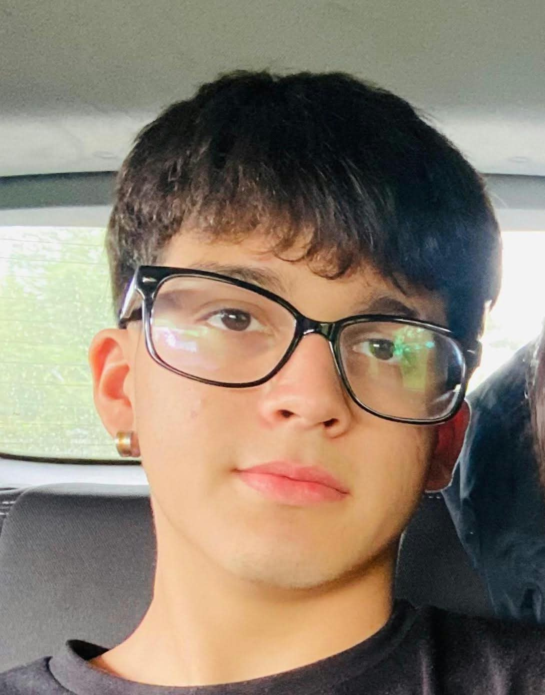
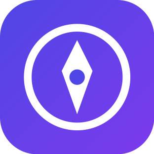
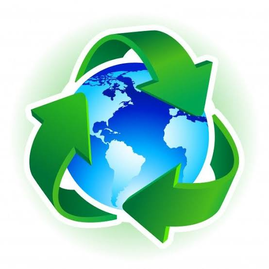
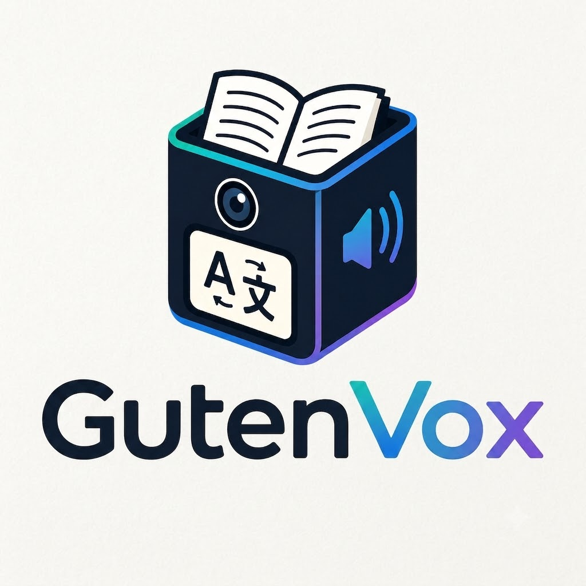

Inicios
Fundamentos de Programación y Desarrollo Web
Aprendizaje de HTML, CSS puro, maquetación responsiva.
Abierto a oportunidades laborales
Estudiante de programación y desarrollador web
Aquí presento mi recorrido construyendo soluciones tecnológicas con impacto educativo, social y ambiental.

Sobre mí
Me gusta la programación, crear mis propios proyectos y hacer realidad mis propias ideas. Me gustaría llevar estas ideas a la robótica y ampliar mi visión con la automatización.
Busco una oportunidad para aplicar lo que sé en un equipo real, seguir aprendiendo y aportar con soluciones útiles.
Habilidades
Trayectoria
Aprendizaje de HTML, CSS puro, maquetación responsiva.
Creación de interfaces interactivas orientadas a resolver problemáticas reales: orientación vocacional para estudiantes de enseñanza media y gestión comunitaria de reciclaje en Santiago.
Desarrollo técnico de un robot de lectura, traducción automática y asistencia audible basado en Raspberry Pi, Python, OCR y APIs en la nube.
Formación
Estudie la especialidad de Programacion
lo que aprendi fui programar mis propios sitios web y diseñarlos a la manera que a mi me guste y crear mis propias ideas de sitios web o ir probando cosas nuevas, nuevos lenguajes cosas asi
Proyectos

Plataforma web interactiva con un sistema de quest diseñada para orientar a estudiantes de octavo básico y primero medio.

Sitio web interactivo enfocado en mostrar de forma visual y accesible los puntos verdes de reciclaje en Santiago.

Robot de asistencia accesible (ODS 4 y 10) que escanea textos impresos, los traduce mediante DeepL API y los lee en voz alta.
Contacto
Estoy abierto a oportunidades laborales en desarrollo web. Si tienes una consulta sobre mis proyectos o quieres colaborar, escríbeme.